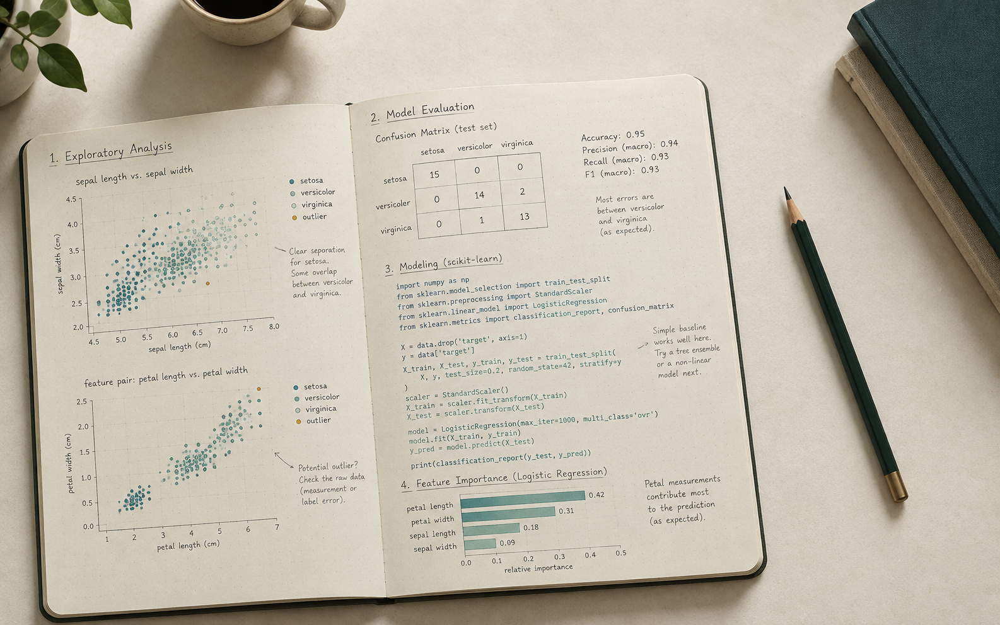

Semester Project
Macao Tourism Recovery and Spending
Historical visitor trends, source markets, accommodation types and tourism spending, analyzed and visualized with Python.
University of Macau · CISC7204 · Data Science
I am Chenyang Xu. This portfolio presents my CISC7204 semester project on Macao tourism and two Python coursework collections in data analysis and visualization.

CISC7204 Projects
Browse the original notebooks, scripts, charts, datasets and supporting notes in these public repositories.
Semester Project
Historical visitor trends, source markets, accommodation types and tourism spending, analyzed and visualized with Python.
Assignment 01
Twelve original coursework notebooks across six modules, documenting data preparation, Python analysis and exploratory workflows.
Assignment 02
Original course notebooks and Dash Python scripts, preserving the notebook outputs and demonstrating static and interactive charts.
About
Created for the University of Macau CISC7204 Data Visualization course, this portfolio shares my coursework and semester project in a reproducible format.
My interests include Python data analysis, visual communication, machine learning and the responsible interpretation of real-world datasets.
Contact
Source files and documentation are published in the linked project repositories.